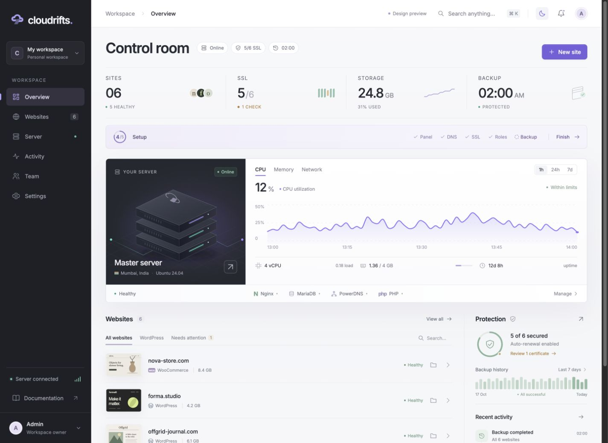

Website provisioning
WordPress, WooCommerce, and PHP sites with Linux users, document roots, PHP-FPM pools, MariaDB, vhosts, and setup diagnostics.
Phase 1 public preview · Ubuntu 24.04 VPS
Cloudrifts turns a fresh Ubuntu server into a browser-based hosting panel for WordPress, WooCommerce, PHP, SSL, DNS, backups, logs, files, and server roles.
curl -fsSL https://gist.githubusercontent.com/RetrixDev/86efd4eab68602c54a3e3759ba24fec7/raw/cloudrifts-install.sh | sudo bash

Users, vhosts, PHP-FPM pools, databases, SSL, and diagnostics.
Retry from exact failure hints.
Local backup and restore trails.
Built for people searching for a modern hosting control panel, Ubuntu VPS control panel, WordPress control panel, PHP hosting panel, cPanel alternative, CyberPanel alternative, CloudPanel alternative, and self-hosted server control panel.
Control without the black box
Cloudrifts keeps the panel close to the server. Install roles, create sites, retry SSL, inspect logs, edit files, and recover backups while seeing what changed and what needs attention.
WordPress, WooCommerce, and PHP sites with Linux users, document roots, PHP-FPM pools, MariaDB, vhosts, and setup diagnostics.
DNS preflight, Let’s Encrypt attempts, required record hints, retry jobs, optional PowerDNS, and registrar delegation guidance.
Nginx, Apache, PHP-FPM, MariaDB, optional DNS, optional mail role setup/status, and webserver switching workflows.
File browser, file edits, access/error/PHP logs, local backups, restore jobs, activity, and role health checks.
Operator flow
Use a fresh Ubuntu 24.04 x86_64 VPS with root or sudo access.
The bootstrap downloads a pinned version-tagged GitHub bundle and verifies SHA256 before install.
The installer prints a one-time browser setup link for your panel hostname and DNS choice.
Create WordPress, WooCommerce, or PHP sites and manage SSL, logs, files, backups, and roles.
Install from Gist
The public Gist script is a small bootstrap. It fetches the version-tagged GitHub bundle, checks the pinned SHA256, extracts Cloudrifts, then runs the full Ubuntu installer.
Open the simple install guide →curl -fsSL https://gist.githubusercontent.com/RetrixDev/86efd4eab68602c54a3e3759ba24fec7/raw/cloudrifts-install.sh | sudo bashCloudrifts 0.1.0-dev bootstrap
Verifying SHA256
Starting Cloudrifts bundle installer
Setup: http://YOUR_SERVER_IP:8080/setup/sso/...SHA256 · 41d2b1c7a6d345ba23254a81c00c9d856ca44bb089bf458f9ff31341ca74cd4a
Public preview
Installer, setup URL, website creation, SSL retry, diagnostics, file manager, logs, backups, restore jobs, DNS role, mail role setup/status, and job trails.
One fresh Ubuntu 24.04 VPS running WordPress, WooCommerce, PHP, Nginx/Apache, MariaDB, SSL, DNS, and hosting operations from a browser panel.
Full mailbox management, DKIM/DMARC automation, remote backup providers, multi-server clusters, and complete production team permissions.
Promote-ready control panel